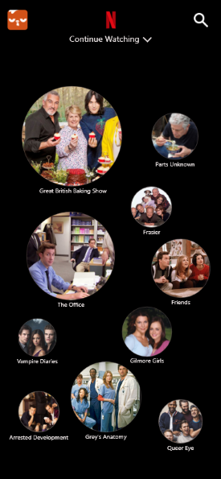
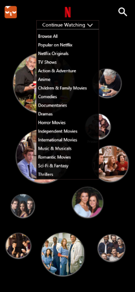
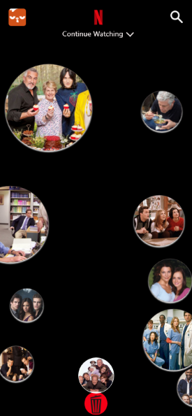
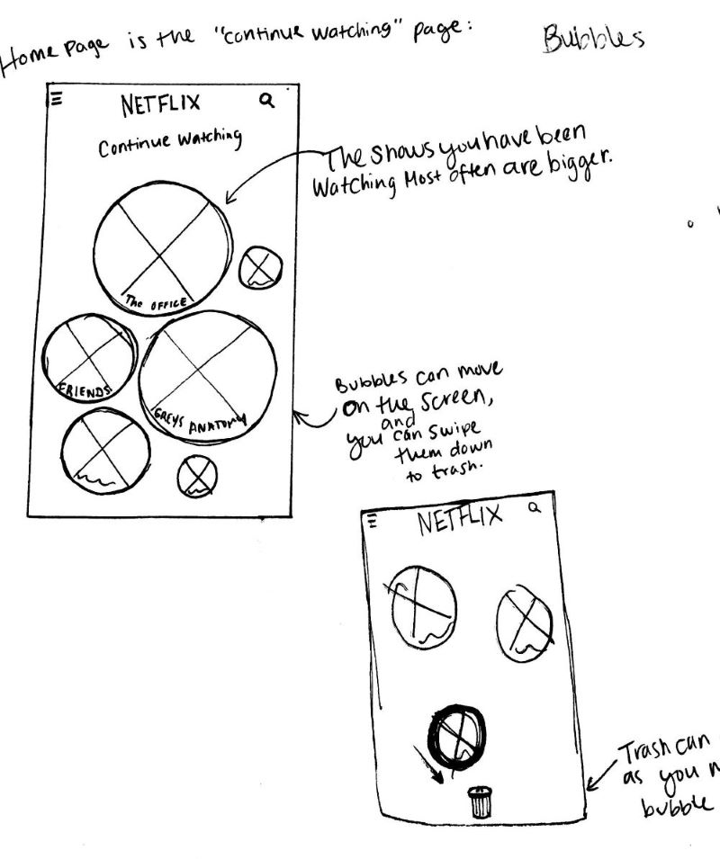
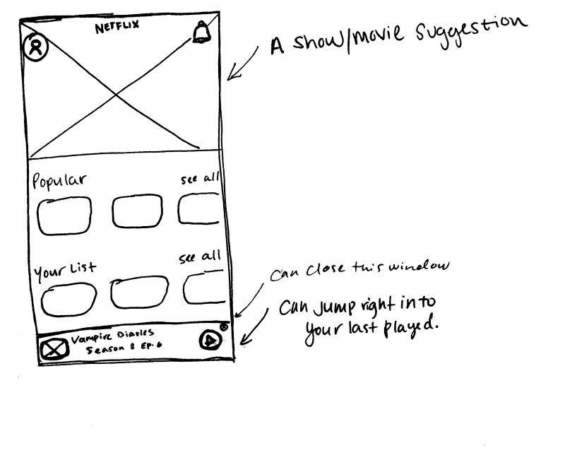
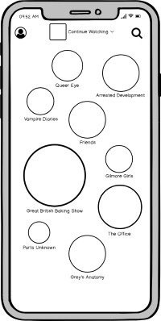
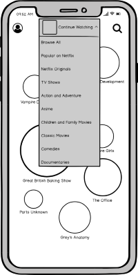
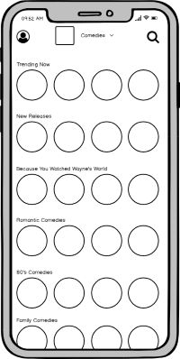
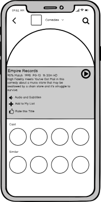

Netflix Mobile Redesign
A redesign for Netflix' Mobile app that emphasizes the continue watching section.
  Overview
We were given the task to redesign the Netflix App for mobile screens. I decided to focus on the "Continue Watching" section as many of my fellow classmates, and myself were becoming frustrated that this section seems to move around.
Audience
Netflix has a huge variety of users. To maintain the scale of this project, I focused in my research and design on users ages 15-60. This range illustrated users who would be using Netflix on a mobile device
Constraints
This project had a very quick timeline of 2 weeks. Within this short amount of time I was able to put sketches and wireframes infront of users twice in order to gain feedback and direction. I was the sole owner of this project and conducted all research and design alone.
One of my first sketches exploring a bubble motif.
Design Process
I began this project by talking to my classmates and friends to see what they thought of the current design.
I wanted to know what they would change, how it could work better, and how I could improve the overall usability. We were also told that we could think differently if wanted, and really change directions from the original design. With this in mind, I wanted to try something new and fun.
A sketch exploring more themes
I showed three sketches to my eight potential users to gauge how they felt. Overall, they liked the idea of using bubbles to showcase each show. The idea is that you can move the bubbles around as if they are floating. The bigger ones are shows you have watched recently and frequently. Smaller ones may be a show you watched only a couple times. You can drag any bubble down to the trash can to remove it from your continue watching section.
After deciding on this idea to move forward with I began to wireframe.
   A simple set of wireframes.